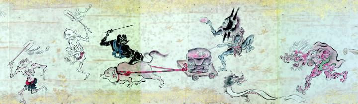

血のような赤い液体が入った樽とそれを曳く化物を中心に、前後には急須や角盥など器物の化物、赤鬼、幣帛を持った骸骨が進む。
著作者：吉光／出典：親書誌：U426_nichibunken_0057：百鬼ノ図；ヒャッキノズ／日付：2007／資源識別子：U426_nichibunken_0057_0004_0000
Copyright (c)2010- International Research Center for Japanese Studies, Kyoto, Japan. All rights reserved.